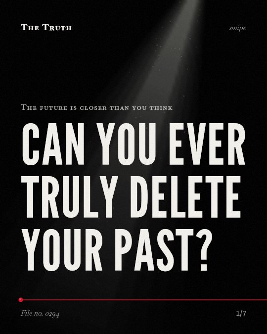

The future is closer than you think
Can you ever truly delete your past?

Blockchain immutability conflicts with the right to be forgotten.
While technical pathways exist, the fundamental architecture of distributed ledgers creates a direct tension with data deletion requirements.
Established. Several studies combined, or official data. The evidence is mixed.
What the research found
Proposed mitigation strategies for the Right to Be Forgotten include off-chain data storage, hash-based referencing, and redactable blockchain mechanisms.
“Proposed mitigation strategies include privacy-by-design approaches, off-chain data storage, hash-based referencing, and redactable blockchain mechanisms.”
Systematic review, 2026. Taşdelen, Denetişim.
The Right to Be Forgotten is predominantly interpreted as a legal obligation rather than an ethical principle.
“The findings indicate that RTBF is predominantly interpreted as a legal obligation rather than an ethical principle.”
Systematic review, 2026. Taşdelen, Denetişim.
Blockchain is an immutable distributed ledger where transactions are jointly performed through cryptocurrency-based consensus algorithms by worldwide distributed nodes.
“Blockchain has decentralized mechanisms with persistency and auditability and runs as an immutable distributed ledger, where transactions are jointly performed through cryptocurrency-based consensus algorithms by worldwide distributed nodes.”
Observational study, 2022. Wei et al., ACM Transactions on Embedded Computing Systems.
There is a conflict between immutable ledgers and data deletion requirements.
“The most frequently identified ethical challenge concerns the conflict between immutable ledgers and data deletion requirements.”
Systematic review, 2026. Taşdelen, Denetişim.
Public blockchain systems have unique features that lead to a tension with the General Data Protection Regulation (GDPR).
“The most common type of blockchain systems, public (permissionless) blockchain systems have some unique features that lead to a tension with European Union's General Data Protection Regulation (GDPR)”
Review, 2023. Sağlam et al., Blockchain Research and Applications. This shows a link, not a cause.
The architecture of the ledger.
Blockchain systems are distributed ledgers where transactions are performed by worldwide nodes using consensus algorithms. This immutability makes deleting personal data difficult within the system.
Your digital footprint may be permanent.
The right to be forgotten is a legal obligation. That may be why the technology currently struggles to meet those legal standards for your personal information.
This part is our reading of the evidence, not a finding.
A simple transaction.
You buy a coffee with a digital wallet. The record of that purchase enters a distributed ledger where every node holds a copy of the data.
The honest summary
The evidence confirms a fundamental tension between blockchain's immutability and the Right to Be Forgotten, but it also identifies several technical pathways to address this conflict.
The sources do not provide a definitive mathematical proof of impossibility, but rather identify the conflict and propose various engineering workarounds.
Can you ever truly delete your past?
Sources
- Qian Wei, Bingzhe Li, Wanli Chang et al. (2022). A Survey of Blockchain Data Management Systems. ACM Transactions on Embedded Computing Systems. Observational study, cited 111 times.
- Abdulkadir Taşdelen (2026). ETHICAL CHALLENGES OF THE RIGHT TO BE FORGOTTEN IN BLOCKCHAIN SYSTEMS: A SYSTEMATIC REVIEW. Denetişim. Systematic review.
- Rahime Belen Sağlam, Enes Altuncu, Yang Lü et al. (2023). A systematic literature review of the tension between the GDPR and public blockchain systems. Blockchain Research and Applications. Review, cited 147 times.
Also read for this file, not quoted
- Chen et al. (2020). HyperBSA: A High-Performance Consortium Blockchain Storage Architecture for Massive Data.
- Vangala et al. (2021). Smart Contract-Based Blockchain-Envisioned Authentication Scheme for Smart Farming.
- Xu et al. (2021). wChain: A Fast Fault-Tolerant Blockchain Protocol for Multihop Wireless Networks.
This file was researched and drafted by software, then checked by rules a model cannot talk its way around: each quote above was matched word for word against the paper, and every number had to appear in it. How files are made.